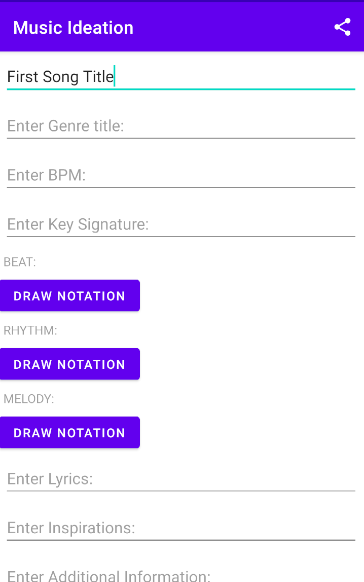
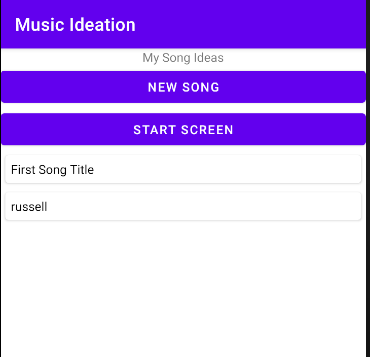
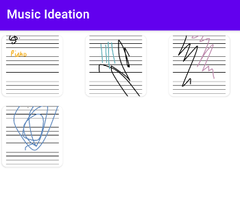
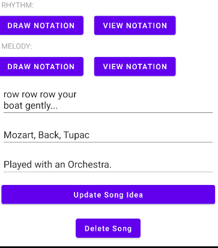
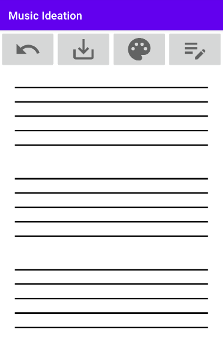
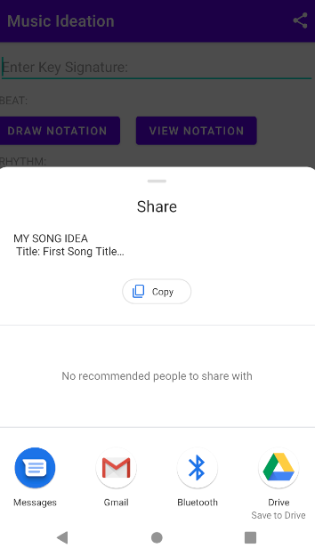
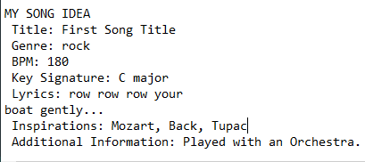

1. Click "My Song Ideas" button, then click the "New Song" Button".
2. Here you can enter your ideas song attributes.
3. Press "Add Song Idea" when you filled all your current ideas into the song folder.

NOTES: 🎓
For a song to be created the only attributed that needs to be filled is the song title.
To access the Beat, Melody or Rhythm's Draw Notation screen, the title needs to be added first!
1. Click "My Song Ideas" button. If you have created a new song as explained in the above section, a button containing the song title will be generated
2. To access that songs current music attributes, click the button.

3. Now you have entered the song folder for that song, you are able to view its contents.
4. Here you are able to view all music notes you have drawn by selecting "View Notations" button. A gallery of relevant images will be displayed for you to zoom into.

4. If you would like to update its attribute values or add new drawing notations, just click on the appropriate input field or "Draw Notation" button.
5. After viewing and updating the song's attributes, click the "Update Song Idea" button to confirm changes and return to the song ideas page.

1. Inside a music folder, click on the "Draw Notation" button to acess the page.
↶ This button removes the last drawing stroke you have added to the canvas.
💾 This button saves the current state of the canvas to external storage
🎨 This button allows the user to change the pen's colour.
📝 This button allows the user to change the pen's width via changing the slide bar. You must press the button again to remove the slide bar.

NOTES: 🎓
To draw, you can drag, tap and press your finger to act as a pen.
1. Click "My Song Ideas" button. If you want to delete a song already stored in the "My Song Ideas" page, select the button with the song title.
2. Scroll to the bottom of that page and HOLD the delete button. You will then go back to the "My Song Idea's" page.
1. Whenever a song is created, updated or deleted, a "ping" sound is played. 🎸
Anytime you open the User Guide a nice pop up notification will appear. :)
If you are creating or updating an idea, you can share the contents of the song folder.
Just click on the "share" icon on the top right, and a menu will appear!

Below is an example of the kind of data to be shared.
